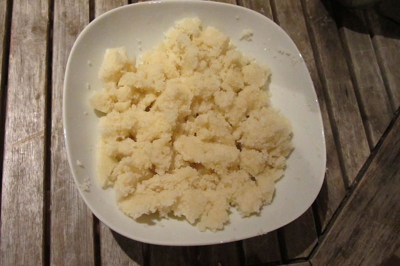

Gari

Description
Originally from the Ivory Coast, fermented cassava couscous, or attieke, is a tangy alternative to wheat couscous. It has a slightly sour taste that goes well with your favorite savory and spicy dishes. It's an easy dish to make and is delicious the next day; just add a bit of water before reheating. It is a gluten-free way to enjoy couscous.
Ingredients
- 1 tablespoon vegetable oil
- ¼ cup minced yellow onion
- ¼ cup minced carrot
- ¼ cup minced celery
- ¼ cup chopped peanuts
- 2 tablespoons black sesame seeds
- 1 bay leaf
- salt to taste
- 1 (300 g) box attieke (cassava couscous)
- 1 (300 g) box attieke (cassava couscous)
- 1 cup water
- 2 tablespoons chopped fresh cilantro
- Heat oil in a large skillet over medium-high heat. Saute onion, carrot, and celery until fragrant, 3 to 4 minutes. Add peanuts, sesame seeds, bay leaf, and salt, stirring often. When the vegetables are tender and the seeds and peanuts have toasted, add the attieke, stirring constantly. Pour the water over the entire pan, distributing evenly.
- Cover and reduce the heat to medium, allowing the couscous to steam until it is moist and heated all the way through, about 5 minutes.
- Remove the cover and fold the couscous with a spatula. Do not stir, as this will mash the couscous, just use a folding maneuver to mix the ingredients from the bottom upwards and let the couscous breathe to help the water evaporate. Top with chopped cilantro.